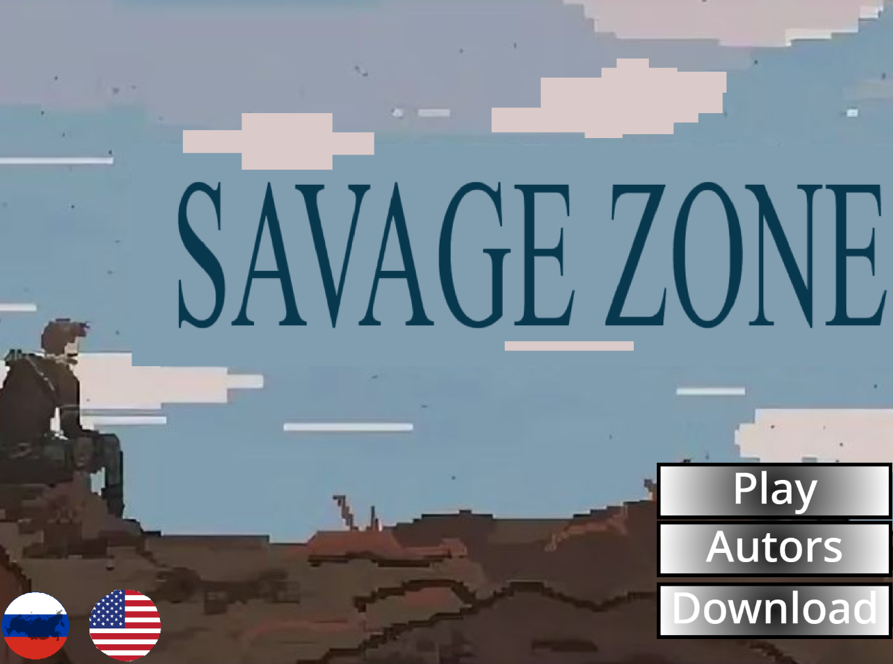

Savage Zone
Scratch-проект от Games Studio и Your Nightmare Studio.

Описание
Savage Zone - игра на Scratch от Games Studio и Your Nightmare Studio. Сейчас доступна ссылка на страницу проекта Scratch.
Что внутри
Scratch
Игра запускается на платформе Scratch.
Браузер
Можно открыть проект без установки.
Студии
Проект от Games Studio и Your Nightmare Studio.
Как запустить
- Нажать кнопку “Играть на Scratch”.
- Дождаться загрузки проекта на Scratch.
- Запустить игру на странице проекта.